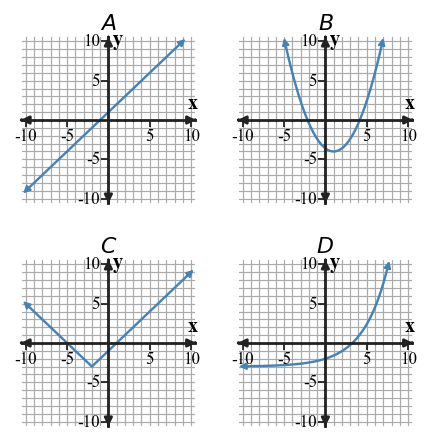

Recognizing Function Families
Mathematical idea: A function family is identified by evidence, not by a guess from one clue.
Students will compare how different representations show change. They will practice naming a family and defending that choice with differences, ratios, shape, or structure.
Learning Target
Learning Target: Students will identify common function families from graphs, equations, tables, and contexts.
I can statements
- I can construct evidence for a function family using patterns in graphs, equations, tables, and contexts.
- I can apply family features to sort representations into linear, quadratic, exponential, absolute value, and other familiar forms.
- I can determine which representation gives the strongest evidence for a function family when features seem similar.
What's To Come
This is a long-range preview for future lessons. Do not solve it today. Instead, annotate it individually. Circle anything familiar, underline symbols or directions that seem important, and write notes about what information you think will be needed later.
As you annotate, ask yourself: What parts (words, symbols, graphs) do you KNOW? What parts look FAMILIAR? What parts look like jibberish?
Design a four-representation model for a quadratic with vertex $(2,-3)$ and $y$-intercept $5$: a short context, a four-row table, an equation, and a description of the graph. Make sure each representation gives evidence for the same family.
Teacher note: This is preview only. Look for annotations about known vocabulary, familiar graph or equation features, and questions students can revisit later.
Intro
Directions
Read the introduction aloud with a partner or in a small group. As you read, annotate the text by highlighting important ideas, circling key vocabulary, and writing short notes about connections, questions, or predictions in the margins.
Many relationships can be described by a family, but the family name should come from evidence. In a table with inputs increasing by 1, equal first differences show a constant rate of change, which supports a linear family. That evidence is stronger than simply noticing that the outputs go up.
Some patterns grow faster without being exponential. For a quadratic relationship, the first differences change but the second differences stay constant. This helps separate quadratic patterns from tables that only look like they are speeding up.
A graph, equation, table, or context may each show a different clue. When two clues seem similar, a careful mathematician compares the quality of the evidence instead of choosing the representation that looks easiest. A single graph shape may suggest a family, but a table or equation can confirm it.
Graphs of parent functions help us remember common shapes such as lines, parabolas, V-shapes, and exponential curves. Tables can show constant differences, second differences, or constant ratios, while equations often show recognizable forms.
In modeling situations, the family should make sense for the story. Constant speed may fit a linear model, repeated multiplying may fit an exponential model, and symmetric height or area patterns may fit a quadratic model.
Teacher note: Listen for students connecting vocabulary to representations, not just underlining isolated words.
Stop and Discuss
- What evidence in a table supports a linear family?
- What table pattern is useful for recognizing a quadratic family?
- Why might one representation give stronger evidence than another?
Answers: 1) Equal first differences show a constant rate of change. 2) Constant second differences recognize quadratic patterns. 3) One representation may confirm a clue that another only suggests.
To classify a function family, compare more than one kind of evidence whenever possible.

| Family clue | What to look for | Example evidence |
|---|---|---|
| Linear | Constant first difference | $+3,+3,+3$ |
| Quadratic | Constant second difference | First differences $3,5,7$ |
| Exponential | Constant ratio | $ imes 2, imes 2, imes 2$ |
| Absolute value | V-shape and symmetry | Outputs mirror around a vertex |
In a context, the input tells what is changing and the output tells what is being measured, so the family should match the story of the change.
Example 1: Name a Family from First Differences
A table has inputs that increase by 1. The outputs are shown below. Name the most likely family and state the evidence.
| $x$ | 0 | 1 | 2 | 3 | 4 |
|---|---|---|---|---|---|
| $y$ | 3 | 5 | 7 | 9 | 11 |
Answer: Linear. The first differences are $+2,+2,+2,+2$, so the rate of change is constant.
You Try It 1: Identify Constant Difference Evidence
Name the most likely family and state the evidence.
| $x$ | 0 | 1 | 2 | 3 | 4 |
|---|---|---|---|---|---|
| $y$ | 9 | 6 | 3 | 0 | -3 |
Answer: Linear. The first differences are $-3,-3,-3,-3$.
Stop and Discuss
- How did the first differences support both answers?
- What would change if the input steps were not all 1?
Discussion guide: Both tasks use constant first differences; remind students to check equal input spacing first.
A constant ratio means each output is multiplied by the same factor when the input increases by 1.

| $x$ | 0 | 1 | 2 | 3 |
|---|---|---|---|---|
| $y$ | 3 | 6 | 12 | 24 |
Here, $6\div3=2$, $12\div6=2$, and $24\div12=2$, so the repeated multiplication supports an exponential family.
Example 2: Use a Ratio to Classify a Table
Classify the family for the table and state the pattern that supports your choice.
| $x$ | 0 | 1 | 2 | 3 |
|---|---|---|---|---|
| $y$ | 2 | 6 | 18 | 54 |
Answer: Exponential. The outputs are multiplied by 3 each time, so the ratio is constant.
You Try It 2: Classify by Repeated Multiplication
Classify the family and identify the repeated pattern.
| $x$ | 0 | 1 | 2 | 3 |
|---|---|---|---|---|
| $y$ | 5 | 10 | 20 | 40 |
Answer: Exponential. The outputs multiply by 2 each time.
Stop and Discuss
- Why is a constant ratio stronger exponential evidence than “it gets bigger”?
Discussion guide: A ratio compares multiplication. Larger outputs alone can happen in linear or quadratic tables too.
Second differences compare how the first differences change.
| $x$ | 0 | 1 | 2 | 3 | 4 |
|---|---|---|---|---|---|
| $y$ | 2 | 5 | 10 | 17 | 26 |
| First differences | $+3$ | $+5$ | $+7$ | $+9$ | |
| Second differences | $+2$ | $+2$ | $+2$ |
Because the second differences are constant, this table gives evidence for a quadratic family.
Example 3: Use Second Differences
Classify the table. Show the first differences and second differences that support your choice.
| $x$ | 0 | 1 | 2 | 3 | 4 |
|---|---|---|---|---|---|
| $y$ | 3 | 6 | 11 | 18 | 27 |
Answer: Quadratic. First differences are $+3,+5,+7,+9$ and second differences are $+2,+2,+2$.
You Try It 3: Find the Family from Difference Patterns
Classify the table using first and second differences.
| $x$ | 0 | 1 | 2 | 3 | 4 |
|---|---|---|---|---|---|
| $y$ | 1 | 4 | 9 | 16 | 25 |
Answer: Quadratic. First differences are $+3,+5,+7,+9$; second differences are $+2,+2,+2$.
Stop and Discuss
- How are first differences and second differences answering different questions?
Discussion guide: First differences describe output changes; second differences describe changes in those changes.
Example 4: Critique a Family Claim
A student says the table is exponential because the outputs grow faster as $x$ increases. Critique the claim and state a better family choice.
| $x$ | 0 | 1 | 2 | 3 | 4 |
|---|---|---|---|---|---|
| $y$ | 5 | 8 | 13 | 20 | 29 |
Answer: Not exponential because ratios are not constant. The first differences are $+3,+5,+7,+9$, so the second differences are constant and quadratic is a better choice.
You Try It 4: Respond to a Misclassification
A student claims the table is linear because every output increases. Critique the claim and state a better family choice.
| $x$ | 0 | 1 | 2 | 3 | 4 |
|---|---|---|---|---|---|
| $y$ | 4 | 7 | 12 | 19 | 28 |
Answer: Not linear because first differences are not constant. The second differences are constant, so quadratic is better.
Stop and Discuss
- What evidence would you ask for before accepting a family claim?
Discussion guide: Ask for a table pattern, equation form, graph feature, or context pattern—not just a visual guess.
Summary
Today you identified function families by using evidence from tables, graphs, equations, and contexts. A strong answer names the family and explains why the evidence fits.
Linear tables have constant first differences, quadratic tables have constant second differences, and exponential tables have constant ratios when inputs increase evenly.
A common error is choosing a family because outputs increase or because a graph looks familiar without checking evidence.
Strong understanding means you can compare clues and decide which representation gives the clearest support for a family choice.
Common Mistakes
- Only noticing growth. Why it is tempting: many functions increase. What to check instead: check differences, ratios, and shape.
- Forgetting equal input steps. Why it is tempting: difference patterns are easier to compute than reading the whole table. What to check instead: confirm the input increases by the same amount.
- Calling faster growth exponential. Why it is tempting: exponential graphs often grow quickly. What to check instead: look for a constant ratio.
- Ignoring graph features. Why it is tempting: shape feels obvious. What to check instead: connect the shape to vertex, symmetry, intercepts, or rate behavior.
- Using one weak clue. Why it is tempting: one clue can be fast. What to check instead: look for agreement across at least two representations when possible.
Optional Future Task Reflection
Look back at the future task. Do not solve it yet. Highlight one part that makes more sense now than it did at the beginning. Circle one part that still feels unfamiliar. Write one sentence about what representation you would look at first.
A table has equal first differences when inputs increase by $1$. Name the most likely family and the evidence that supports it.
Classify the family for the table and state the rate, difference, or ratio that supports your choice.
| $x$ | 0 | 1 | 2 | 3 |
|---|---|---|---|---|
| $y$ | 4 | 7 | 10 | 13 |
What is one idea about recognizing function families you understand better now than at the start of class? Write at least one complete sentence.
What is one thing about recognizing function families you still want to understand or practice? Be specific — name the idea, not just "everything."